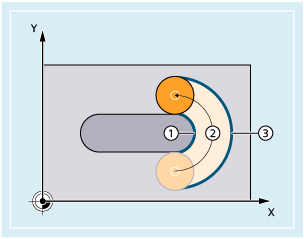
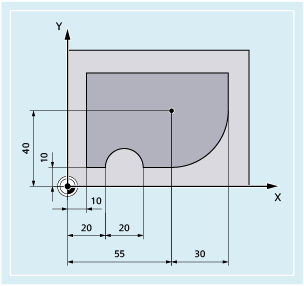

With activated correction mode G41/G42, the programmed feedrate for the milling tool radius first refers to the milling tool center path (refer to Chapter "Coordinate transformations (frames)").
When you mill a circle (the same applies to polynomial and spline interpolation) the extent to which the feedrate varies at the cutter edge is so significant under certain circumstances that it can impair the quality of the machined part.
Example: Milling a small outside radius with a large tool. The path that the outside of the milling tool must travel is considerably longer than the path along the contour.
① | Short path of the inner side of the milling tool along the contour |
② | Tool path |
③ | Long path of the outer side of the milling tool |
Because of this, machining at the contour takes place with a very low feedrate. To prevent adverse effects, the feedrate needs to be controlled accordingly for curved contours.
| Constant feedrate on the milling cutter center path The control keeps the feedrate constant and feedrate overrides are deactivated. |
| Constant feedrate at the contour (tool cutting edge). This function is preset per default. |
| Constant feedrate at the tool cutting edge only at concave contours, otherwise on the milling cutter center path. The feedrate is reduced for inside radii. |
In this example, the contour is first produced with a CFC-corrected feedrate. During finishing, the cutting base is also machined with CFIN. This prevents the cutting base being damaged at the outside radii by an excessively high feedrate.
| Program code | Comment |
|---|---|
| N10 G17 G54 G64 T1 M6 | |
| N20 S3000 M3 CFC F500 G41 | |
| N30 G0 X-10 | |
| N40 Y0 Z-10 | ; Feed to first cutting depth |
| N50 CONTOUR1 | ; Subprogram call |
| N40 CFIN Z-25 | ; Feed to second cutting depth |
| N50 CONTOUR1 | ; Subprogram call |
| N60 Y120 | |
| N70 X200 M30 |
See also:
Feedrate optimization for curved path sections, CFTCP, CFC, CFIN Further information